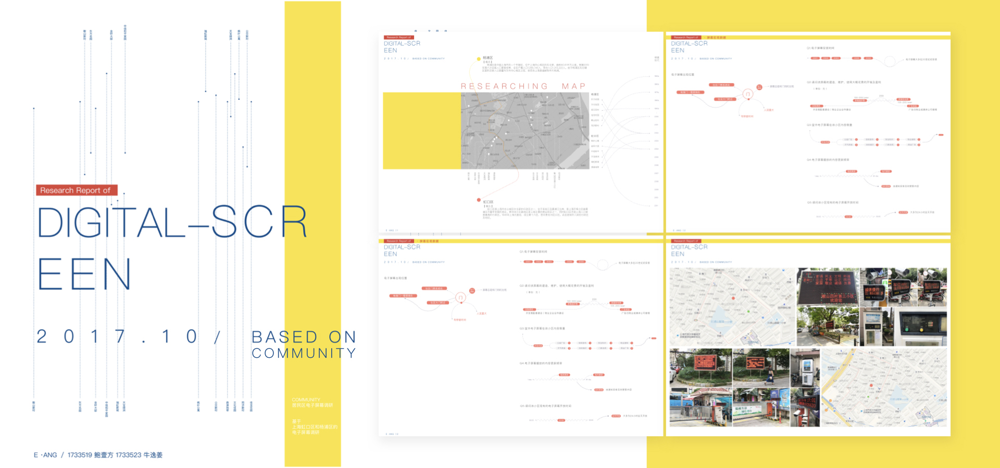
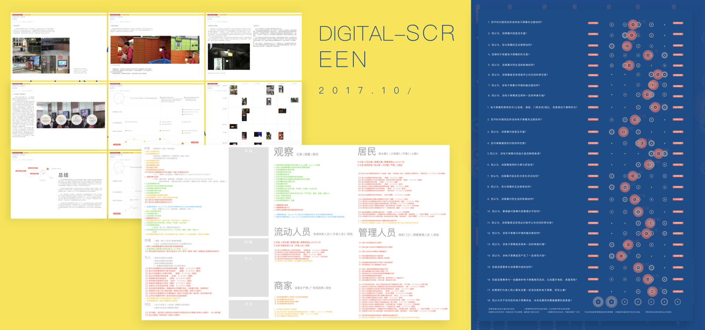
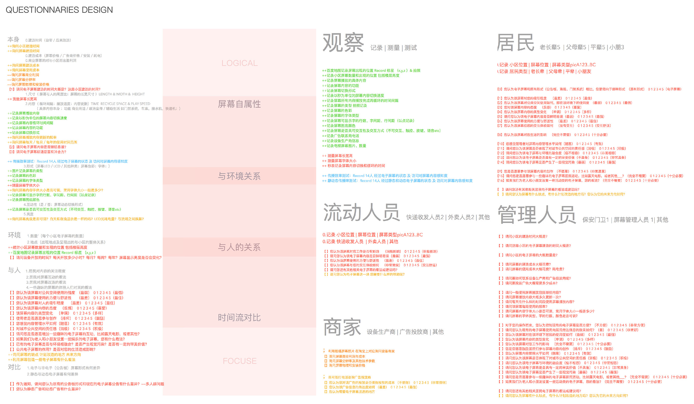

返 回
该项目旨在调研住宅区域电子屏幕境况，基于上海市杨浦区和虹口区的十余处居民社区，我们根据 “屏幕自身属性、与人的关系、与环境的关系、时间发展流” 四个方向设计了调研问卷，通过实地记录屏幕相关属性、调研社区居民、访谈管理人员、调研流动人员，结合网上资料的搜集，将所得数据整理分析，以可视化的方式表达，以及撰写报告。我主要负责明确调研逻辑，进行问卷设计，数据收集及处理，数据可视化及分析、报告编写及图表绘制。
 电子屏幕调研（点击查看详细报告PDF）
通过初步走访和观察，经过总结与分析，调研逻辑明确为四个方向，如图：
电子屏幕调研设计逻辑
调研地图
然后，对利益相关者进行相应的问卷设计，再进行详细数据的收集和访谈。我们走访了位于上海杨浦区和虹口区的10个小区，具体选择依据是小区建设时间（50-70年代、90年代、2000年及以后），包括：枫叶公寓、金轩大邸、瑞虹新城、源森地带、中信和平、鞍山新村、东方名园、佳龙花园、控江四村、文化佳园。
根据屏幕的形式和功能，居民区电子屏幕大致分成六种类型：
电子屏幕分类
由用户调研宏观数据得知，居民们平常对社区的电子屏幕关注度较低，且认为电子屏幕的内容不够丰富，自我参与屏幕互动的程度不高。对室外电子屏幕，居民往往是在行走过程中浏览信息；对室内电子屏幕，居民往往是利用等待电梯时间观看信息。总体而言，居民认为社区电子屏幕在生活中可有可无。此外，与周边环境关系而言，居民认为电子屏幕与环境融合度较高，且体现处一定的城市公共空间责任感，具一定的审美价值。与之相反，而区相关管理人员普遍对电子屏幕持积极态度，认为电子屏幕对自己的工作、对小区居民的生活、对城市公共空间而言都体现了积极的作用。
调研数据
从社区屏幕建造和管理角度，由于居民社区建造的不同属性，政府和房地产开发商对屏幕管理呈现不同形式。对于“鞍山新村”等50年代建设的社区，其电子屏幕由政府主导管理，具体屏幕的安装和内容的宣传由街道办事处负责，由对应居委会负责执行。而地产开发商建造小区，在早期开发地产时，电子屏幕的安装主要由地产开发商负责；而后期电子屏幕的增添，如电梯广告屏、室外广告立屏、产品服务类屏幕等，都需要企业与社区居委会、社区业委会进行协商建造。
从居民对电子屏幕的体验角度，与传统的媒介形式相比，居民更倾向于电子屏幕形式，但现有的电子屏幕形式及内容，不能满足居民日益增加的物质文化需要。附带与产品的屏幕，基于功能基础如“丰巢”、“厨易时代”等，人们认为电子屏幕在服务体验上扮演了积极的角色。
此外，在调研中，发现了一个有趣的现象：电子屏幕通常出现在 “门” 附近，如居民区电子屏幕出现的地点通常在社区门禁系统处、电梯门一楼侯梯处、 社区大门附近等。电子屏幕与门呈现同时出现的趋势，也许主要原因是：其一，门是人流量大的一个通道，便于扩大信息向居民传达的广度；其二， 门本身扮演了一个隔断的角色，居民通常会在该处有所停留，以此便能增强信息向居民传达的深度。
阅读详细报告，请点击查看PDF文档。